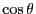

In Sec. 3.5, MC simulation of 2D disk dumbbells was presented to introduce MC simulation using more than one kind of trial move; in that case, displacement of randomly selected molecules and rotation of randomly selected molecules. For this suggested project, we can imagine performing simulations of dumbbells in 3D in a completely analogous manner. Modify the code mclj.c such that every even numbered particle is bonded to its odd-numbered neighbor one up. Each such pair forms a molecule, and trial moves consist of (1) moves of molecule centers by a distance , and (2) rotations of molecules by random angular displacements . (Recall how one must sample polar angles to maintain uniform density of direction in 3D space: one must sample uniformly from !) An interesting quantity to measure is the orientational correlation function (Eq. 88) as a function of density.